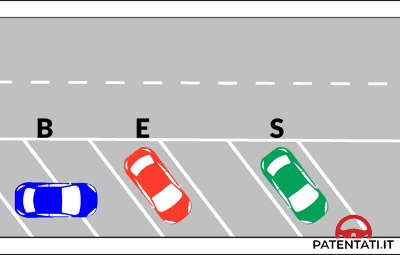

دليل وقاموس الباب الثالث عشر: قواعد حركة السير وتموضع المركبات
Norme di circolazione e posizione dei veicoli — الدليل التفاعلي الشامل لقواعد التموضع على الطريق، هندسة الانعطاف، الرجوع للخلف، فيزياء المرايا، والزوايا الميتة لمستوى A2-B1.
🚗 أولاً: تموضع المركبات والسير في صفوف متوازية (Posizione e File Parallele)
يحدد كود السير الإيطالي قواعد صارمة لمكان تواجد المركبة على عرض الطريق، خاصة في الطرق ذات الاتجاهين والطرق الحضرية.
- 🔑 القاعدة الأساسية: يجب السير بأقصى قرب ممكن من الحافة اليمنى للطريق (
Stringere il più possibile il margine destro). - 🏔️ المنحنيات والتلال: في المنحنيات (
Curve) ومطبات الرؤية (Dossi)، يُلزم السائق بالتمسك أكثر بالحافة اليمنى. - ⚠️ فخ شائع: يُحظر السير في منتصف الطريق (
Centro della carreggiata) حتى لو كان الطريق واسعاً أو فارغاً!
- 🛣️ الطريق ذو 3 حارات واتجاهين: الحارة الوسطى مشتركة لكلا الاتجاهين وتُستخدم فقط للتجاوز (
Solo per il sorpasso). - 🚫 محظور قطعياً: السير العادي المستمر في الحارة الوسطى أو اليسرى دون وجود عملية تجاوز فعلية.
- 📊 26 سؤالاً وزارياً تتناول قواعد السير في صفوف متوازية.
- 🚦 الحالتان الحصريتان اللتان يُسمح فيهما بالسير في صفوف متوازية (
Marcia per file parallele): - 1️⃣ الازدحام الشديد: (
Traffico intenso) حيث تسير المركبات في جميع الحارات معاً. - 2️⃣ التقاطعات المنظمة: بإشارات ضوئية أو شرطي مرور يوجه المركبات لاستخدام كل الحارات.
- 🏍️ فخ: حظر سير الدراجات النارية بين السيارات (
Tra le file) حتى في الازدحام!
↩️ ثانياً: هندسة الانعطاف وتغيير المسار (Svolte e Inversione di Marcia)
يُحدد كود السير الإيطالي قواعد تموضع دقيقة لكل نوع من أنواع الانعطاف، مع عقوبات مشددة على المخالفين.
- ➡️ التموضع: الالتزام بأقصى الحافة اليمنى (
Margine destro) قبل وأثناء الانعطاف. - 👀 التحقق: فحص المرايا + الالتفات للتأكد من عدم وجود دراجات أو مشاة على اليمين.
- 🔔 الغماز: تشغيل الغماز الأيمن (
Indicatore destro) بوقت كافٍ قبل المناورة.
- ⬅️ التموضع: الاقتراب من خط منتصف الطريق (
Asse della carreggiata) دون تجاوزه. - 🔄 مركز التقاطع: ترك مركز التقاطع على يمينك (
Lasciare il centro dell'incrocio alla propria destra). - ⏳ الأسبقية: إعطاء الأسبقية للقادمين من الاتجاه المعاكس (المقابل).
- ⬅️ التموضع: الانتقال لأقصى الحافة اليسرى تماماً (
Margine sinistro). - ⚠️ فخ الكويز: في الطريق ذي الاتجاه الواحد، التموضع مختلف تماماً عن الطريق ذي الاتجاهين!
- 🔔 ملاحظة: الغماز الأيسر يجب أن يعمل طوال مدة المناورة كاملةً.
🚫 مصفوفة الحالات الست لحظر الدوران للخلف (Inversione di marcia)
يُحظر الدوران الكامل للخلف (U-turn) قطعياً في الحالات التالية (10 أسئلة وزارية):
Indicatore di direzione per tutta la durata della manovra) وإعطاء الأسبقية لجميع المركبات من كلا الاتجاهين.
🔙 ثالثاً: مناورة الرجوع للخلف الآمن (Retromarcia — 17 سؤالاً وزارياً)
تُعد مناورة الرجوع للخلف من أخطر المناورات لأن مجال الرؤية يكون محدوداً جداً. كانت هذه المناورة مفقودة تماماً من المسودة الأصلية رغم أنها تشكل 17 سؤالاً وزارياً.

- ✅ الأسبقية للجميع: يجب إعطاء الأسبقية لجميع المركبات القادمة من اليمين واليسار وكذلك المشاة خلف السيارة (
Dare la precedenza ai veicoli provenienti sia da destra che da sinistra). - ✅ تشغيل الغماز: يجب تشغيل مؤشرات الاتجاه (
Azionare gli indicatori di direzione) قبل وأثناء المناورة. - ✅ التأكد من خلو الطريق: فحص المرايا والالتفات بالكتف والنظر من الزجاج الخلفي (
Assicurarsi che la strada sia libera). - ✅ الاستعانة بمساعد: عند انعدام الرؤية الخلفية، يجب الاستعانة بشخص يقف خارج السيارة يرشدك (
Farsi aiutare da persona a terra). - ✅ الحذر الشديد: المناورة تتم ببطء وحذر خاص (
Particolare prudenza).
- يجب تشغيل أضواء الطوارئ الأربعة أثناء الرجوع ← FALSO (يكفي تشغيل الغماز فقط).
- يجب تشغيل ضوء الضباب الخلفي ← FALSO (لا علاقة له بالمناورة).
- يجب إعطاء الأسبقية فقط للقادمين من نفس اتجاه سيرك ← FALSO (للجميع من كلا الاتجاهين!).
- يجب المناورة بسرعة لإخلاء مكان الوقوف ← FALSO (ببطء وحذر شديد).
- يجب استخدام الكلاكس بشكل متكرر أثناء المناورة ← FALSO (غير مطلوب ومحظور التكرار).
🪞 رابعاً: فيزياء المرايا العاكسة والزوايا الميتة (Specchi e Angoli Ciechi — 41 سؤالاً)
هذا المحور هو أكبر كتلة أسئلة في الباب الثالث عشر بواقع 41 سؤالاً وزارياً. يجب فهم خصائص كل نوع من المرايا وحدودها.
- 🔍 الزوايا الميتة: المرايا لا تلغي الزوايا الميتة كلياً (
Non eliminano completamente gli angoli ciechi) — سؤال يتكرر بكثافة! - 👀 ضرورة الالتفات: يجب دائماً التحقق بإدارة الرأس قبل تغيير الحارة أو الانعطاف لأن المرايا لا تكفي وحدها.
- 📋 متى تُستخدم: قبل التجاوز، تغيير الحارة، الانعطاف، التوقف، فتح الباب، والرجوع للخلف.
- 🔎 خدعة المسافات: المرآة المحدبة تجعل الأجسام تبدو أصغر وأبعد مما هي عليه في الواقع (
Più piccoli e più lontani). - 📐 مجال رؤية أوسع: تمنح زاوية رؤية أعرض من المرآة المسطحة، لكن على حساب دقة تقدير المسافات.
- ⚠️ فخ متكرر: سؤال يقول إن المرآة المحدبة تظهر الأجسام أقرب ← FALSO (الصحيح: أبعد!).
- 🌙 الاستخدام الليلي: المرآة المركزية تملك وضعية خاصة لمنع الإبهار من أضواء السيارات الخلفية ليلاً (
Antiriflesso). - 🔀 كيف تعمل: تُعدّل زاوية انعكاس الضوء لتقليل شدة وهج المصابيح الأمامية للسيارات خلفك.
- 📌 قاعدة ذهبية: لا تؤثر على وظيفة المرآة الأساسية في إظهار ما خلف السيارة.
Sedile) ثم ضبط المرايا (Specchi) — وليس العكس! لأن تغيير وضعية المقعد يُغير زاوية الرؤية في المرايا.
🎪 خامساً: الحالات الاستثنائية (المواكب، الشاحنات، والدوار)
- 🚫 حظر قطع الموكب: يُحظر قطعياً اختراق أو شق أي موكب رسمي أو جنائزي (
Tagliare un corteo). - 🔇 حظر الكلاكس: يُمنع استخدام المنبه الصوتي أمام أو بجوار الموكب.
- 🅿️ ماذا تفعل: التوقف على الجانب الأيمن وانتظار مرور الموكب بالكامل، أو الانعطاف في شارع فرعي جانبي.
- ⚠️ فخ: لا يُسمح بالتجاوز أو المرور من خلال فجوات الموكب حتى لو بدت كبيرة!
- 🚛 الانحراف التمهيدي: الشاحنات الطويلة والمقطورات تنحرف يساراً أولاً (
Allargarsi a sinistra) لتتمكن من الانعطاف يميناً في الشوارع الضيقة. - 🚫 خطر التجاوز: يُحظر على السيارات الصغيرة التجاوز من اليمين عندما تلاحظ انحراف الشاحنة لليسار — فهي تستعد للانعطاف!
- 📐 مساحة الانعطاف: المسافة بين المحور الأمامي والخلفي كبيرة، مما يجعل ذيل المركبة ينحرف بعكس اتجاه الانعطاف.
- 🔄 الدوار بشاخصة: عند وجود شاخصة
Dare precedenza، الأسبقية لمن هم داخل الدوار بالفعل. - ⚠️ الدوار القديم بدون شاخصة: تُطبق قاعدة اليمين الحر العادية (الأسبقية للقادم من الخارج!).
- 🔔 الخروج: تشغيل الغماز الأيمن (
Freccia destra) عند الاقتراب من المخرج المطلوب.
📖 سادساً: القاموس التقني المبوب ثنائي اللغة (Glossario A2-B1)
| المصطلح بالإيطالية | الترجمة بالعربية | السياق الامتحاني ومفتاح الحل |
|---|---|---|
| Margine destro | الحافة اليمنى للطريق | القاعدة الأساسية: كل مركبة تلتزم بأقصى اليمين ما لم يكن هناك سبب للتموضع غير ذلك. |
| Asse della carreggiata | خط منتصف نهر الطريق | عند الانعطاف لليسار في طريق باتجاهين — اقترب منه دون تجاوزه. |
| Margine sinistro | الحافة اليسرى للطريق | يُستخدم فقط للتموضع في طريق ذي اتجاه واحد للانعطاف يساراً. |
| File parallele | صفوف متوازية | فقط في حالتين: ازدحام أو تقاطع منظم. حظر الزجزاج بين الحارات. |
| Retromarcia | الرجوع للخلف | أسبقية للجميع (يمين + يسار + مشاة). حظر أضواء الطوارئ. |
| Inversione di marcia | الدوران للخلف (U-turn) | 6 حالات حظر. الغماز طوال المناورة. أسبقية لكلا الاتجاهين. |
| Specchio retrovisore | المرآة الخلفية العاكسة | لا تلغي الزوايا الميتة كلياً. فحصها قبل أي تغيير مسار. |
| Angolo cieco / morto | الزاوية الميتة / العمياء | المنطقة التي لا تراها في المرايا — يُلزم الالتفات بالرأس. |
| Specchio convesso | المرآة المحدبة | الأجسام تبدو أصغر وأبعد (Più lontani). مجال رؤية أوسع لكن مسافات مخادعة. |
| Antiriflesso | وضعية منع الإبهار | في المرآة المركزية ليلاً لتقليل وهج أضواء السيارات الخلفية. |
| Corteo | موكب رسمي أو جنائزي | حظر القطع والكلاكس. التوقف يميناً أو الانعطاف في شارع جانبي. |
| Autotreno / Autoarticolato | شاحنة مع مقطورة / مركبة مفصلية | تنحرف يساراً أولاً لتنعطف يميناً. حظر التجاوز من اليمين. |
| Rotatoria | الدوار / الميدان الدائري | مع شاخصة: أسبقية لمن بالداخل. بدون شاخصة: يمين حر. |
| Indicatore di direzione | الغماز / مؤشر الاتجاه | يُشغّل قبل أي انعطاف أو تغيير حارة أو رجوع للخلف أو U-turn. |
| Carico | حمولة المركبة | لا تبرز خلفياً أكثر من 3/10 طول المركبة. حظر البروز الجانبي. تثبيت محكم. |
| Pericolo o intralcio | خطر أو عرقلة للمرور | يُحظر أي سلوك يشكل خطراً أو يعرقل السير: السباق، البطء بلا مبرر، عدم الإشارة. |
| Farsi aiutare da persona a terra | الاستعانة بمساعد خارج السيارة | عند الرجوع للخلف بانعدام الرؤية — شخص يقف خارج السيارة يُرشدك. |